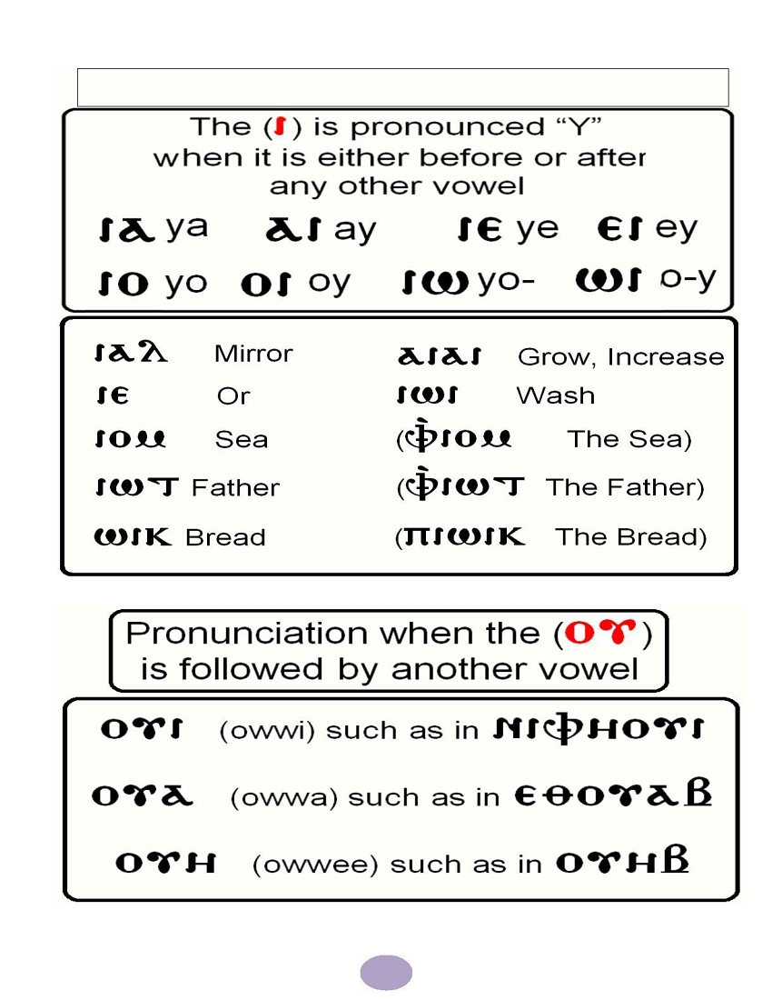

His Holiness Pope Tawadros II
118 th Pope of Alexandria and
Patriarch of the See of Saint Mark

Page
St Mark ’ s Festival Anthem- Hold fast what you have
2
Hold fast what you have
3
Hold Fast to Your Faith – The first Epistle of St Timothy
5
Hold Fast to Your Church Rituals – Rituals of the Church
14
Hold Fast to Your Church Doctrine
22
Hold Fast to Your Moral Values – ‘ Man of Principle ’
26
Memorization
31
Coptic
33
Hymns & Rituals
39
Visit the St. Mark Festival's website at
www.smfsus.org
to find the material for the festival and for
guidelines and information on the tests
1
St. Mark ’ s Festival 2015 Anthem
Hold fast what you have,
That no one may take your crown,
Hold fast what you have
What you have hold fast
Grains of Wheat we sure are planted
Here on earth we live and die,
Deep in heart are always chanted,
God ’ s own promises we live by
Grains of Wheat we ’ re humbly waiting
For God ’ s rain to bless our land
We bring fruits as we were told,
Thirty, sixty ‘ n ’ a hundred fold
Hold fast what you have,
That no one may take your crown,
Hold fast what you have
What you have hold fast
Grains of Wheat the days are counted,
Here on earth we live and die,
Enemy is growling out your doors,
Give no slumber to your eyes
Narrow is the gate, broken is the road,
Where we ’ re marching carrying a load,
Upwards far above the skies,
Keep your treasure and your heart
Hold fast what you have,
That no one may take your crown,
Hold fast what you have
What you have hold fast
2
This year ’ s theme is “ hold fast what you have ” (Revelation 3:11). The Lord gave St. John the Beloved this
advice when He sent His angel to him on the island of Patmos where he was exiled and saw the revelation.
The Lord gave him this revelation for many reasons:
1) To know the necessity of the hardships of this world
2) To know the benefits from these hardships in holding unto the faith
3) To be assured of the final victory for the Lord and His Church over all the powers of evil
through all generations
The church has faced a lot of hardships from the Jews, the pagan Roman Empire, the Greek philosophers,
from different people and religions but it was always victorious at the end through God who loved her.
No matter what hardships we endure on our way to the kingdom of heaven, it will by no mean be
comparable to the glory and joy that awaits us there. We pray to God to help us be steadfast in Him and
complete our struggle to the end!
T HE S ECRET FOR V ICTORY
The secret for the victory of the Holy Church is the Lord Jesus Himself.
He is the one to whom our teacher St. Paul said:
“ We are more than conquerors through Him who loved us ” (Romans 8:37)
Therefore we have a great deal to hold onto in the Holy Church:
1. Hold onto Your Faith: The Holy Church has been a hero in fighting against all the heresies that Satan
and the heretics have directed toward her and toward the Christian faith in the early centuries.
Arius: against the divinity of the Son
Eutyches: against the mystery of the Incarnation
Macedonius: against the divinity of the Holy Spirit
Sabellius: against the humanity of Christ which is
Nestorius: against the natural union in the Lord
united with His divinity
--And many more who were broken in front of the solidness of the Christian faith.--
The Nicene Creed defined for us, with straight-forward words, the divinity of the Lord, the mystery of
incarnation and salvation, His death, resurrection, ascension into the heaven and His sitting at the right
hand of the Father after He had done for us an everlasting salvation.
The Creed also tells us about God the Father, the Pantocrator,
the creator of Heaven and Earth and how He was manifested to us
through
the incarnation of His Son. And after we have only been hearing about Him
through the prophets, we now can see Him incarnated.
“ The Word became
flesh and dwelt among us, and we beheld His glory, the glory as of the only
begotten of the
Father, full of grace and
truth ” (John 1:14)
3
The Creed also tells about the Holy Spirit, the Lord, and the Giver of Life, who proceeds from the Father and
ascended upon the apostles on the day of the Pentecost like tongues of fire sitting on each one of them.
The Holy Spirit is in all of the Church Sacraments to convict us, heal us, and give us gifts.
2. Hold onto Your Holy Bible: The Holy Bible is the word of God to men. It
contains books, characters, events, and beneficial lessons to men across the
generations.
It is important that our study of the Holy Bible becomes a way of life so we can
be faithful witnesses to Christ in the Church and in the world.
3. Hold onto Your Doctrine : Believing in God, no matter what you think of it, is
always connected to the true doctrine. The doctrine which teaches us the
“ mystery of the church ” :
the union of the head
– Christ- with the body – the Church.
Therefore the orthodox way of thinking and living is a must!
4. Hold onto Your Spirituality: Our Lord Jesus Christ has given us through baptism the garments of
righteousness. For this reason, we wear white clothes and a red girdle when we are newly baptized, as a
symbol of purification and renewal by the blood of Christ the Savior.
The baptistery, according to the Holy Tradition, should be located on the southwest area of the church.
It should be a room with an entrance from the outside and another into the church. The newly baptized,
after he had denounced Satan and proclaimed his faith in Christ would:
a) Move from the west to the east; from darkness to light
b) Move from the south to the north; from the place of dishonor to the place of honor
And the life of the believer becomes spiritual and holy since they live by the sacraments,
the Holy Bible and prayer. “ But the fruit of the Spirit is love, joy, peace, longsuffering, kindness,
goodness, faithfulness, gentleness, self-control. ” Galatians 5:22-23
5. Hold onto Your Moral Values: Whoever is renewed by the Spirit and walks by the Spirit should live a
virtuous life daily. But this needs spiritual strive and guidance from the father of confession and daily
spiritual exercises for a man to get used to holding himself accountable: before a sin, during a sin and after
a sin. Therefore none of us should be negligent about the “ little foxes ” ( Song of Songs 2:15) who come in
from the smallest holes in the wall and after it has
eaten and gotten fat it can ’ t get out from the
wall-
protected field anymore. So it stays in the field hiding and eating till it becomes a danger to the field and
the owner of the field. That is why we should pay great attention to
our daily behavior, according to the
commandment of the apostle to “ Have regard for good things in the sight of all men ” (Romans 12:17).
Here the apostle tells us that to have regard for good things
in the sight of all men, not only inside the
church. This good behavior will be a way of preaching the teachings of our Lord Jesus Christ.
“ That they may see your good works and glorify your Father in heaven. ” Matthew 5:16
4
The 1 Epistle to St. Timothy
Test questions will include readings from the Epistle of 1 Timothy as well as this article.
st
Who is St. Timothy?
St. Timothy was born in the city of Lystra (in present day Turkey). His father was Greek
and his mother, a Jewish Christian (Acts 16). He met St. Paul first in Lystra. He became a
disciple of St. Paul who invited him to join him on his travel. St. Paul circumcised him in
order to be accepted by the Jews. He followed him in his travels, and shared his labors.
St. Paul ordained him a bishop over the city of Ephesus and the neighboring cities.
St. Timothy preached there and converted many to the Christian faith and baptized
them.
St. Paul wrote two epistles to St. Timothy: the first of which was in 65 A.D., and the
second was shortly before 67 A.D., urging him, "Take heed to yourself and to the
doctrine, continue in them, for in doing this you will save both yourself and those who hear you"
(1 Tim. 4:16). He also wrote to him about the qualifications of a bishop, priest, deacon, and the widows.
He cautioned him also about false prophets and commanded him not to lay his hand on anyone in haste,
but only after thorough examinations and testing. St. Paul called Timothy his son and his beloved.
St. Timothy shepherded the flock of Christ extremely well, and he illuminated minds by his teachings,
instructions, and reproaches. He continued to rebuke the Jews and the Greeks, therefore they envied him
and congregated against him and started beating him until he was martyred in the city of Ephesus.
Connect the fact with the corresponding verse from the Holy Bible.
St. Timothy ’ s circumcision
1Timothy 1:3
St. Paul considered St. Timothy as his son
1 Timothy 1:1
St. Paul ordained him bishop of Ephesus
Acts 16:3
St. Timothy was a young man
1 Timothy 12:4
St. Paul wrote this epistle
1 Corinthians 4:17
3 5
Read Chapter 1: Warnings!
St. Paul tells St. Timothy to remain in Ephesus to oppose the false teachings that deviate
from the sound
doctrine and causing disputes rather than edification. Thus, they lead people astray. St. Paul makes it clear
that the commandment is based on love. Sound teaching brings about love from a pure heart, right
conscience and sincere faith. Unlike false teachings that bring disputes.
St. Paul talks about the Old Testament laws and how they should be used for their true purpose. The law
was made for the unrighteous to realize their wickedness and search for Christ who will lead them as a
savior and give them the righteous life and raise them above the law. Christ came to save everyone even
the people who commit the greatest sins.
St. Paul talks about himself and remembers his own sins. He recalls how he has
persecuted the church, but out of ignorance. Therefore, God has mercy on him and
transformed him into a servant and preacher and gracefully gave him the gifts and
fruit of the Holy Spirit.
At the end of the chapter, St. Paul mentions Hymenaeus and Alexander who
deviated from sound doctrine. St. Paul talks about delivering them to Satan
(disciplining them) in order to repent and return to the sound teaching.
Chapter 1 Activity:
Write the verses from Chapter 1 that go with each sentence:
1. St. Paul emphasizes that the service that he does is from God.
______________________________________________________________________________________
2. In the litany of the Gospel, we say “ For You are the life of us all, the hope of us all, and the salvation of us
all. ” ___________________________________________________________________________________
Questions for discussion:
3. What is the meaning of “ a true son in the faith ” ? (Verse 2)
_______________________________________________________________________________________
4. How did St. Paul describe love in verse 5?
____________________________, ____________________________, ____________________________
5. How can our love be that way?
_______________________________________________________________________________________
_______________________________________________________________________________________
6
6. Match the verses from the Book of St. Timothy with the verses on the right.
1 Timothy 1:7
James 3:1, Romans 3:21
1 Timothy 1:8
Romans 10:4
1 Timothy 1:9
Matthew 9:13, Romans 7:7
7. St. Paul thanks God who trusted his faithfulness and strengthened him and called him for service even
though he is not worthy because of his previous sins:
1 ____________________ 2 ____________________ 3 ____________________
8. Who are Hymenaeus and Alexander? (2 Timothy 2:17, 2 Timothy 4:14)
____________________________________________________________________________________
Read Chapter 2: Faithfulness in Prayer
St. Paul says that prayers are needed for fighting the wrong teaching and
defending the sound doctrine. St. Paul teaches us to pray for all men, especially for
leaders that God guides them to lead wisely that we may live in peace.
St. Paul talks about God ’ s desire for all men to be saved, so He sent His true Son to
save us. Christ is the only mediator between man and God by covering our sins and
redeeming us.
St. Paul gives instructions for men and women on how they should worship and what their different roles
are in the church.
Chapter 2 Activity:
1. Who is the only Mediator between God and men? Write the verse.
________________________________________________________________________________
2. Which of these were St. Paul ’ s advices for men and which for women?
-
Adorn themselves in modest apparel
men
women
-
Without wrath
men
women
-
With propriety and moderation
men
women
-
No costly clothing
men
women
-
Lifting up holy hands
men
women
-
Not with braided hair or gold or pearls
men
women
-
No doubting
men
women
-
Professing godliness with good works
men
women
-
In silence with all submission
men
women
7
Chapter 3: Qualifications for Bishops and Deacons
In this chapter, St. Paul highlights the main qualifications of a bishop and a deacon. The servant of God has
to have certain qualifications. St. Paul covers many:
Their desire – should be for good works
Their attitude – hospitable, temperate, not violent
Their discipline – abstaining from wine, demonstrate self-control and good behavior
Their ability to teach and their spiritual maturity, their reputation and their faith.
St. Paul ends the chapter by describing the church as the pillar and ground of the truth. By abiding in the
church, we understand the truth.
Activity for chapter 3
1. Read verses 1-13 and write the characteristics of bishops and deacons in the appropriate box
Bishop
Deacon
2. Write down the desired characteristics of deaconesses or priests wives as described by St. Paul (v. 11).
_________________________________________________________________________
________________________________________________________________________________
3. In verse 15, St. Paul described the church as:
a. __________________________
b. __________________________
c. __________________________
8
4. Match the parts of the verse in 1 Timothy 3:16 to its explanation:
Verse: 1 Timothy 3:16
Explanations
“ And without controversy great is
the mystery of godliness ”
Every nation believed in Him
“ God was manifested in the flesh,
Justified in the Spirit ”
Ascended to the heavenly glory
“ Seen by angels ”
The Second Hypostasis was
incarnate and became a man
Christ the Savior
“ Preached among the Gentiles ”
was preached among the
Gentiles not just the Jews
“ Believed on in the world ”
The Holy Spirit testified to His
righteousness
“ Received up in glory ”
The angels saw Him with us in
His incarnation
Read Chapter 4: Duty of the Bishop
St. Paul warns St. Timothy about people departing from the faith and how they will deceive others to follow
their way. St. Paul mentions that these people will forbid others to get married (This is not what God
intended. God sanctified marriage) and to abstain from foods (God created everything good, nothing is
unclean).
Here we have to differentiate between false spiritualism and self-control in fasting. When we fast, our
purpose is to promote godliness and control ourselves in order
to nourish our spirit. We do not abstain
from food because it is unclean, but to focus on nourishing the spirit not torturing the body. St. Paul
continues by saying that God has created these for us and they should be done in holiness.
St. Paul also tells St. Timothy that bodily exercise (those directed toward self-righteousness and hypocrisy)
does not profit much, but what is important and profitable is the spiritual exercise (those directed toward
godliness). Train yourself to godliness.
Finally, St. Paul gives St. Timothy some general instructions. “ Let no one despise your youth ” -
conduct yourself in a manner that will be a good example to others. He wants St. Timothy to “ be an
example to the believers in word, in conduct, in love, in spirit, in faith, in purity ” (1 Timothy 4:12).
He
does not want St. Timothy to be discouraged, but to hold fast what he has regarding the faith and doctrine.
9
Activity for chapter 4
1. Read 1 Timothy 4:1; find the words that mean the following:
a. Leave/deny the faith:
_________________
b. The Holy Spirit informs the prophets of future events:
_________________
c. The time between the ascension of Christ to His second coming:
_________________
d. He has false teachers who spread misleading teachings:
_________________
2. How did St. Paul describe false teachers? Verse 2-3
_______________________________________________________________________________________
3. Connect the sayings of St. Paul to its meaning
Sayings of St. Paul
Meanings
His speech and actions should be free
Let no one despise your youth
from all evil desire
Be an example to the believers in
Reading the Holy Bible gives him a
word
message to present to the people
In conduct
Preserve the faith
In love
God ’ s words will be on his lips
In spirit
A servant should teach and watch
himself before teaching others
His love is for everyone especially
In faith
those who offend him
Early in his service, St. Timothy was a
In purity
youth so St. Paul is encouraging him;
he has the power of Christ
His spirituality shows in his
Give attention to reading
worship and conduct
To exhortation
His conduct is Christian according to
the commandments of God
Take heed to yourself
The true teaching of the principles
of Christian faith
10
Read Chapter 5: Pastoral Care
As a bishop, St. Timothy is a father to his congregation and they are his
responsibility. St. Paul gives him instructions on how to deal with all, men and
women, young and old. He gives him instructions regarding the widows and
ministering to them.
He gives him instructions pertaining to priests and ordinations. He also tells
him how to deal with someone who sins, and how to take care of his health.
Activity for chapter 5:
1. What were St. Paul ’ s recommendations to St. Timothy about each of these groups of people?
Widows: ______________________________________________________________________
Elders: ________________________________________________________________________
2. In 1 Timothy 5, find the verses that give these meanings:
“ For we hear that there are some who walk among you in a disorderly manner,
not working at all but are busybodies. ” 2 Thessalonians 3:11
“ You shall rise before the gray headed and honor the presence of an old man,
and fear your God. ” Leviticus 19:32
“ For if a man does not know how to rule his own house,
how will he take care of the church of God? ” 1 Timothy 3:5
“ You shall not muzzle an ox while it treads out the grain. ” Deuteronomy 25:4
“ Whoever is deserving of death on the testimony of two or three witnesses; he
shall not be put to death on the testimony of one witness. ” Deuteronomy 17:6
“ And remain in the same house, eating and drinking such things as they give,
for the laborer is worthy of his wages. ” Luke 10:7
11
Read Chapter 6: Pastoral Care and Final Notes
In this chapter, St. Paul gives instructions to St. Timothy as a bishop regarding other matters; slavery, false
teachers, the good fight of faith, and the rich. St. Paul concludes his epistle with a final exhortation to St.
Timothy.
Christianity does not support slavery, but St. Paul is saying that if the system allows for this unfortunate
reality, then let us deal with it in a Christian way. Let slaves present themselves as godly people,
demonstrating Christian behavior that they may even bring
others to faith. In the same manner, if they
have believing masters, they should not take advantage of them.
St. Paul instructs St. Timothy on how to react if false teachers arise. He gives the reasons behind false
teaching and the results that come from it. He tells him to withdraw himself from such people.
He begins to discuss how greed can lead to selfishness and lusts because rich people use their wealth for
pleasure and not for godliness in helping others. He warns St. Timothy about these issues
and to not hold
fast to riches, but to spirituality. He tells him to “ flee these things and pursue righteousness, godliness,
faith, love, patience gentleness ” (1 Timothy 6:11).
He concludes the Epistle by commanding St. Timothy to “ guard what was committed to his trust and to
keep this commandment without spot, blameless until Our Lord Jesus Christ ’ s appearing. ” (1Timothy 6:
14, 20)
12
Activity for chapter 6:
1.What is the true teaching? What is the wrong teaching? Verses 3-5
_____________________________________________________________________________________
_____________________________________________________________________________________
_____________________________________________________________________________________
2. In verse 6, _______________ + _______________ =
GREAT GAIN
3. In 1 Timothy 6, find the verses that give these meanings:
________________ “ Naked I came from my mother ’ s womb, and naked shall I return there. ” Job 1:21
________________ “ Let your conduct be without covetous ness; be content with such things as you have,
For He Himself has said, “ I will never leave you not forsake you ” Hebrews 13:5
4. What does St. Paul recommend in verse 12?
_______________________________________________________________________________________
______________________________________________________________________________________
5. What were St. Paul ’ s commandments to the rich?
_______________________________________________________________________________________
_______________________________________________________________________________________
13
THE RITES IN THE COPTIC ORTHODOX CHURCH AND ITS
IMPORTANCE
The Coptic Church is rich with her evangelistic and ascetic life, her genuine patriotic
inheritance, her heavenly worship, her spiritual rituals,
her effective and living hymns, her beautiful icons, etc.
She attracts the heart towards heaven without ignoring actual daily life.
We can say that she is an apostolic, contemporary church that carries life and
thought to the contemporary man without deviation. One finds in her life,
sweetness and power of Spirit, with appreciation to and
sanctification of arts, literature and human culture.
W HAT IS THE MEANING OF T HE WORD ‘ R ITUAL ’ ?
The word ‘ Ritual ’ is a translation of the Coptic word ‘ Taxees ’ . This word refers to the order or rite of the
practices and services of the Church, and from it comes the Arabic word ‘ Tux ’ referring to the rites or rituals or
order of things to be done. ‘ Ritual Theology ’ , the word ‘ Theo ’ means God, and the word ‘ ritual means system;
therefore we are practicing a Godly system in our Coptic Church. Ritual Theology is the rites of the Church with
special regard for their theology, belief and spirituality which are their foundation.
.
The rituals, arranged by the Holy Spirit, raise our souls, step by step, towards this victorious Church. It is
through the practices of the Church that all the faithful desire Heaven and strive towards achieving it. The
believer, who lives the life of the Church through her rituals, will live in the depths of our Lord Jesus Christ and
will be led gradually to unity in Christ Himself.
Rituals include the shape of the church, the utensils, the ranks of the priests and the garments they wear. Every
motion and/or action during the worship, every action in and out of the Apostolic Orthodox Church carries with
it
high
spiritual
meaning, some
of
which
may
not
be
instantly
apparent
to everyone.
Each rite carries within itself a profound spiritual and doctrinal meaning for the faithful to taste and
experience during their public worship.
At the beginning of Christianity, the rituals were not the same as today. However, after the end of the
Roman
persecution to the church, which lasted for about 3 centuries, the church began to arrange the rites until it got
to the highest and complete order of spiritual system.
Rituals have been practiced by tradition within the Church, passed down from the Holy Apostles, who received
it from the hands of our Lord Jesus Christ Himself.
We know from the four gospels that the Lord spent about
three and half years teaching His twelve disciples and apostles everything; and also from the Book of Acts that
the Lord after His holy resurrection spent forty days appearing to His holy apostles informing them about all
what concerns the church edification (Acts 1: 3).The Rituals have been passed down from one generation to
another. The Church rituals have a direct relationship to the Holy Bible and the Apostolic Fathers from the first
centuries of Christianity.
Rituals are very important in worship because everything valuable should be organized. If you go to any Coptic
Orthodox Church anywhere in the world, you will not feel like a stranger because all the reading, hymns, and all
the rituals are the same, uniting all of us.
13
13 4
Rites include the following:
1- THE LITURGICAL PRAYERS: it means the congregational prayers (Leto comes from word "Laos" which
means congregations, Erg is taken from the word work; this means the congregation works) and these
prayers were arranged to be prayed by the people all together in one spirit with the same words.
2- THE AGPEYA - The Coptic Orthodox Book of Hours
The word AGPEYA takes origin from the Coptic word TI-AGP, which literally means the hour.
The Agpeya contains the seven canonical prayers that are part of the congregational and also personal
prayers.
(Activity: Fill in the missing boxes)
Prayer
Time
Occasion
The Purpose of the Prayer
PRIME
6:00 AM
The commemoration of the
First Hour
resurrection of the Lord Christ
early on Sunday, and that He is
the true Light
TERCE
9:00 AM
Ask the Holy Spirit to come upon
Third Hour
us and to cleanse us.
SEXT
12:00 PM
Commemoration of the
Sixth Hour
Crucifixion of the Lord Jesus
Christ on the cross with its deep
spiritual meanings.
NONE
3:00 PM
Ask the Lord to give us a share in
Ninth Hour
paradise.
VESPERS
5:00 PM
Instituted to commemorate the
Eleventh
removing of the body of the
Hour
Lord Jesus Christ from the Cross.
His wrapping in linen, and the
anointing with sweet spices.
COMPLINE
6:00 PM
We ask God to forgive us our sins,
Twelfth
and remember the end of the
Hour
world and the need to prepare
ourselves for this last day.
MIDNIGHT 3 watches of the
Prepare for the second coming
midnight prayer
of Christ.
15
3- FEASTS OF THE COPTIC CHURCH (has its own time and prayers every year)
THE SEVEN MINOR FEASTS OF OUR LORD
1 The Circumcision of our Lord
Tobe 6
(Luke 2:21-39)
2 The Entrance of our Lord into the Temple
Meshir 8
(Luke 2:21-39)
3 The Coming of Christ to Egypt
Pashons 24
(Matthew 2:13-23)
4 The Wedding at Cana of Galilee
Tobe 13
(John 2:1-11)
5 The Feast of Transfiguration
Mesore 13
(Mark 9:2-8)
6 Maundy/Holy Thursday
The Thursday of the Holy Week
(Matthew 26:20-29)
7 Thomas's Sunday
Sunday following Resurrection
(John 20:24-31)
THE SEVEN MAJOR FEASTS OF OUR LORD
1 Feast of The Annunciation
Paremhoteb 7
(Luke 1:26-38)
2 Feast of The Nativity
Koiahk 29
(Matthew 2:1-12)
3 Feast of The Epiphany
Tobe 11
(Matthew 3:13-17)
4 Palm Sunday
In the 7th week of the Great Lent
(Mark 11:1-10)
5 Feast of the Resurrection
The 8th day after Palm Sunday
(John 20:1-18)
6 Feast of The Ascension
40 days after the Resurrection
(Luke 24:36-53)
7 Pentecost
50 days after the Resurrection
(John 15:26-16:15)
4-THE SEVEN SACRAMENTS, has 2 important aspects:
1. Doctrinal aspect: Declaration for the Orthodox faith and the biblical origin for the sacrament.
2. Ritual aspect: how to practice and apply these sacraments, and the order of the prayers recited during
the sacrament.
Activity:
Use the following references to prove that our Church sacraments have a Biblical reference?
Reference from the Holy Bible
Sacrament
John 3:5
2 Corinthians 1:21-22
John 6:53-56
James 5:14-15
John 20:23
John 20:21-23
Genesis 2:18, John 2:1-11
5-THE CHURCH READINGS
Each day of the year has its own readings included in the "katamaros" or the book of daily readings.
6-THE CHURCH ICONS
Where the drawing of icons has certain specifications in order for it to be read and understood by every
person.
16
The Importance of Rituals
Was God concerned with rites in the Old Testament? If so, try to remember the example of it?
1. Rituals unify the church: to be one in Christ. The Church is the body of Christ, and Christ has one body
that is not divided. Our Lord Jesus Christ was crucified on the cross His body remained whole; His legs were
not broken as those that were crucified with Him. He was also not killed by the sword so His head remains
connected to His body, which is the church.
Our Lord Jesus Christ emphasized the unity of the Church in the unity of the Apostles, and their unity in
Him:
"Now I am no longer in the world, but these are in the world, and I come to You. Holy Father, keep
through Your name those whom You have given Me, that they may be one as We are." (John 17:11)
"that they all may be one, as You, Father, are in Me, and I in You; that they also may be one in Us, that
the world may believe that You sent Me. And the glory which You gave Me I have given them, that they
may be one just as We are one" (John 17:21-22)
2. Rituals ensure the congregational performance: all church members speak the liturgy which is the
tongue of the church. We look to the east waiting for the second coming of our Lord, looking for the real
light which illuminates every human being.
As the congregation is an essential part in the liturgy. We all pray the same words and at the same time in
one spirit as the Lord has commanded us to pray all together: "When you pray, say: Our Father in heaven,
Your will be done On earth as it is in heaven ͙ " (Luke 11:2) Here we say “ Our Father ” to cry out to Him
together.
3. Rituals explain and preserve the faith from generation to generation without change or distortion.
Rituals are the practical application of the doctrine; they explain the faith through practice.
For example
we all have learned about the divinity of Christ from the Liturgy since a very young age.
The Divine Liturgy was used to respond to heretics like Arius and Eutyches. For example, the sacrament of
the Eucharist proves that Eutyches was wrong; the Holy Body on the altar is a real body,
not dissolved or
degradable as claimed by Eutyches when he said that the human nature of Christ was dissolved in His
divine nature.
What is the significance of the following in the rites of the church? Discuss with your servant:
A. The Censor
B. The Incense
C. When the priest holds the "Gospel"
17
4. Rites explain abstract facts: for example: we use the sign of the Cross in our church, it is the smallest
doctrine in Christianity but it reflects the whole belief. When we sign ourselves with the cross we
understand the incarnation, atonement and redemption and the Holy Trinity.
T HE I NCARNATION : When doing the sign of the cross, we place our fingers on the forehead, saying “ I n the
name of the Father ” -the Father came down from heaven, then we move our fingers down to our stomach
saying “ the Son" to the Earth incarnate from the womb of the Virgin, "referring to the belly," and so on ͙
T HE ATONEMENT AND REDEMPTION : we move our fingers from the left to the right, from darkness to
light with our salvation through the cross.
T HE H OLY T RINITY: In the name of the Father and of the Son and the Holy Spirit "three hypostases (three
persons)", one God Amen. With every the time we make the sign of the Cross we announce our belief in
the Holy Trinity: the Father, the Son and the Holy Spirit, and also announce our belief in the oneness of
God, because we conclude and say one God Amen.
5. Rites declare the sanctity of the matter: when we use material things in the sacraments it became holy.
The biggest proof of that the material became holy is the unity of Christ Himself to it. So the material things
are sanctified in Orthodoxy, the Church prays for Nature (water, plants and crops and ...) in this sense, it is
our duty to preserve the environment.
6. Rites give us fulfilling liturgical prayers :
A. THE WORDS ARE FILLED WITH THEOLOGICAL MEANINGS (each word explains the doctrine).
Example: In the liturgy we say “ O God, the great, the eternal ͙” In this Prayer we mention that God
has no end, we confess that He is the Creator, we announce the immortality of the soul, and that
death is an intruder that entered to the world through the envy of the devil. We use the word
“ manifestation ” which declares the existence of God from the beginning and announces the Trinity.
B. T HE MUSIC : the Coptic Orthodox Church is proud of her Hymns. If we look at the church hymns we
find that they reflect the prayers we say.
18
The Sources of Rituals
1. The Holy Bible is the most important source of the rituals in the Church.
2. Apostolic canons are laws that were put by the twelve Apostles before evangelizing
while they were
gathered together.
3. The Didache is the Lord ’ s instructions taught to the nations through the 12 Apostles.
It revealed the
treasures of the Christian life at the end of the first century and in the second century with the rituals of
that time, instructions of organization, and regulations for liturgical functions.
4. Holy Synod laws that are recognized by the Orthodox Church.
5. Laws and tradition of the Coptic Church and Coptic Patriarchs.
Rituals are a simplification and a practical explanation of the faith in order for everyone to understand it
regardless of age, talents, or level of education.
Hymns explain the faith and doctrine
Fasts carry the meaning of salvation.
Rituals help us to worship God with our souls, minds, and bodies through the work of the Holy Spirit in us.
If it wasn ’ t for the rituals of the Church we would have forgotten our doctrine and would have gone astray
from our faith; especially during the period when the preaching and teaching in the church was weak.
Are rituals useful for my spiritual life?
On the outside, rituals appear to be a set of commandments, selections, and arrangements; but in fact
rituals are a treasure full of riches that appear with continuous practice in honesty.
In your opinion, what are the things that hinder the spirituality of the rituals and their enjoyment?
1. Lukewarm love of Christ:
“ And because lawlessness will abound, the love of many will grow cold." (Matthew 24:12) .The Liturgy is
filled with the beautiful rituals of our beloved Church. When we come to the Liturgy we are coming to be
with God Whom we love so much. Many times our sins hold us back from being with our Lord Jesus Christ
and we become lukewarm. Being lukewarm may be the reason for coming late to the liturgy, feeling bored
in the Liturgy and complaining about the Liturgy, rather than having your full focus on our Lord Jesus Christ
and His love for us.
"If you open your heart to Christ, rite becomes very beautiful."
2. Lack of awareness (knowledge):
We have to understand what is being said. If we watch without understanding we will be criticizing, but
when we understand, we will know and enjoy what is said. The lack of awareness makes us not feel the
beauty of the spirituality of the rituals.
Awareness (knowledge) means:
(A) Understand all the words found in the church' rituals, with a focus on its meaning.
(B) Understand the order of the prayers, and understand the meaning and purpose of this order.
(C) Interaction with hymns and tunes, each tune has a meaning and it carries spiritual feelings
Example: different feeling in the church on Good Friday than the Resurrection liturgy.
19
3. Routine performance:
This means that we go to church just to perform a duty.
Rituals fulfill us by creating a dialogue between us and Christ.
We should stand in the church and speak with our Lord Jesus Christ.
Example: When I say “ Lord have mercy ” from the heart and I am in communion with God, my heart is open
to Heaven with the saints and the Church. Then rituals turn into a way to salvation and we feel like we're in
heaven.
4. Fast speed and preoccupation with other things:
It will be dangerous when we get too busy in this world. It is very important to enter the church and focus
and stay away from everything that I am concerned about during the prayer and liturgy. When we stand to
pray we need to focus on prayer. When we stand in the liturgy we need to focus on the liturgy. It will be
good if we try not to move at all during the prayer, nor speak, nor get busy with anything around us but our
Lord Jesus Christ.
How do I live the rituals?
1. Knowledge
It is very important to know the meaning of things: Psaly, Doxology, Lobsh ... and recognize the different
tunes of the church (Joyful, Standard, Lent, Palm Sunday tunes) so when we enter the church we live and
know the reason this hymn is chanted on this day.
2. Practice
Just knowing is not enough, practice is also
important. My knowledge to the Church rituals makes their
practice fulfilling.
3. Focus
After the knowledge and practice we must focus for the meaning to be clear in our mind.
4. Feeling the presence of Christ in our prayers
Christ is the joy of life, He is the light of the way, and Christ is our life.
Christ is our bridegroom. We must have Christ present in our lives.
Christ is the head; we cannot be a living body without the head.
If Christ is missing there is no life. We must see Christ in every hymn, every verse, every sermon,
every practice, in all rituals, in every occasion, in every prayer, and in every liturgy.
Emmanuel our God is in our midst with the glory of His Father and the Holy Spirit.
20
Activity: What is the meaning of each of the following? Ask your servant
Psaly: ______________________________________________________________________________________
Orthodoxy: _________________________________________________________________________________
Adam Tune: ________________________________________________________________________________
Doxology: __________________________________________________________________________________
Batos: _____________________________________________________________________________________
Exposition: _________________________________________________________________________________
Canticle: ___________________________________________________________________________________
Katamaros: _________________________________________________________________________________
Theotokia: __________________________________________________________________________________
Pascha: ________________________________________________________________________________
21
Now with faith: the doctrine of faith needs the works of grace and the struggle
1) The man who only believes in his struggle and focuses solely on it forgetting the role that the grace
of God has to play in his life either gets prideful for his accomplishment or commits suicide when he
fails
2) The man who believes only in the grace of God and His works forgetting to do his part becomes a
lazy person
3) The holy church teaches us to live in balance: great struggle (without pride or despair) because it is
supported by the grace of God
Therefore when doctrine is clear it draws to us borders and clear landmarks in the spiritual path that we
need to walk on.
1) DEFINITION OF DOCTRINE:
Doctrine is what life is based on, it ’ s the inclinations that determine behavior and is the foundation on
which stands the relationship we have with God and thus the relationship we have with each other. It is
also called “ Dogma ” which is a Greek work that means a principle or a decision. The word “ Dogma ” was
used to describe a decision that cannot be argued or disputed.
The Christian doctrines are usually called “ dogmatic theology ” . Dogmatic theology deals with studying the
facts of the faith and presenting it in a scientific manner.
The doctrine formulates for us the facts about our faith. And if “ just believe ” is an essential statement on
which the salvation of man depends, then we have to be able to differentiate between an “ acceptable faith
in front of God ” and a “ refused faith ” which the devils have for “ Even the demons believe — and tremble! ”
(James 2:19)
The Holy Bible however did not leave us confused about doctrine and the right thinking, it explained to us
all the details of our faith. Therefore no one should claim to be wiser or more spiritual than the Holy Bible
or God and say that doctrine is not important and that all ways lead to God; or claim that we must accept
other beliefs even if they are incorrect or incomplete.
The true faith is not only to believe in God and his existence, but to believe and trust all what He taught us
and have in the Holy Bible.
Question for discussion: If I believe that God exists, and believe in eternity, will this affect my life and
conduct?
22
2) THE IMPORTANCE OF STUDYING DOCTRINE:
“ You can ’ t have sound spirituality if the base is not sound Doctrine. ” Pope Athanasius the Apostolic
With new heresies immerging in the first centuries, the church formulated the theological facts into specific
statements that no one can trespass based on their own understanding straying away from the church
teachings; these statements became the Orthodox Creed. The Creed functions as a guide or a system on
which someone can base or test his own beliefs and thus preventing the start of a
new heresy which can
become a danger to the faith.
That is why studying doctrine is important. It helps us know what we believe, in order not to get confused
with any other set of beliefs and faiths. So for us to keep our orthodox faith alive we have to study
doctrine.
What does non-denominational mean? It is simply negating doctrine. So one becomes non-orthodox not
anti-orthodox. You won ’ t find him attacking orthodoxy but completely negating it. This is more dangerous
because it will make people forget it and not live by it.
3) THE SOURCES FOR DOCTRINE:
The Holy Fathers did not invent our doctrine but they only formulated it
based on the Holy Books and the holy apostolic traditions- the teachings of
Christ to the apostles that were only recorded verbally. And it has to be
known that each one of these – the Bible and the tradition- is used to keep
the other in check; we received the Holy Bible through the traditions, and
any tradition that is not in accordance with the bible is not accepted.
And to keep anyone from saying that these verbal traditions are wrong or
that they are open to interpretations, the church insisted on the
consciences of the early fathers on the holy traditions and the ecumenical
councils were the proof of that. St. Athanasius said “ whe never a tradition
has been accepted by us we record it so no man can lose it after ” .
4) THE LORD CHRIST AND THE
DOCTRINE:
Question: In His ministry, did our Lord Christ hold onto doctrinal teachings? Look at these verses: John 3:3-
5, John 3:13-15, John 6, Matthew 24, and Matthew 25
The lord Christ himself has discussed great numbers of theological matters with the disciples and with the
Jews and never called on focusing solely on love without doctrine. Even the disciple that was teaching love
until his last breath is the same one that warned against heretics “ If anyone comes to you and does not
bring this doctrine, do not receive him into your house nor greet him. ” 2 John 1:10
21 3
a) On the Sacrament of Confession: The Lord Jesus Christ made sure to declare the
importance of the authority of priesthood in loosing and bounding when He said
to His holy disciples: “ Assuredly, I say to you, whatever you bind on earth will be
bound in heaven, and whatever you loose on earth will be loosed in heaven ”
(Matthew 18:18). The Lord Christ himself followed the rituals and the authority
of the priesthood at that time when he told the healed leper “ go your way, show
yourself to the priest, and offer the gift that Moses commanded ” (Matthew 8:4)
b) On fasting: When the disciples of John asked Christ “ Why do we and the Pharisees fast often, but
Your disciples do not fast? ” (Matthew 9:14) The Lord Christ did not leave the matter unanswered
and He did not say that it is up for everyone to decide when to fast or if they want to fast. He
answered them saying “ the days will come when the bridegroom will be taken away from them,
and then they will fast. ” (Matthew 9:15)
c) The Lord ’ s teachings on theology: “ When Jesus came into the region of Caesarea Philippi, He
asked His disciples, saying, ‘ Who do men say that I, the Son of Man, am? ”’ (Matthew 16:13). The
Lord asked this question waiting for St. Peter ’ s answer: “ You are the Christ, the Son of the living
God. ” (Matthew 16:16) which is the rock and the cornerstone of the Christian faith.
The Lord also asked the Pharisees a theological question and that they were not able to answer ͙
“ While the Pharisees were gathered together, Jesus asked them saying, “ What do you think about the
Christ? Whose Son is He? ” They said to Him, “ The Son of David. ” He said to them, “ How then does David
in the Spirit call Him ‘ Lord, ’ saying: ‘ The L ORD
said to my Lord, “ Sit at My right hand, Till I make Your
enemies Your footstool ”’ ? If David then calls Him ‘ Lord, ’ how is He his Son? ” And no one was able to
answer Him a word, nor from that day on did anyone dare question Him anymore. ” Matthew 22:41-46
The Lord wanted to make them and us aware that we need to know about His divinity.
Activity: These verses contain some of the important doctrines of our orthodox faith. Can you find them?
Matthew 5:26-30, Matthew 16:27
Matthew 24:13, Matthew 7:21-23
John 3:36, John 8:24
John 3:3-6
John 6:32, John 6:33, John 6:48, John 6:51
24
5) DOCTRINE AND CONDUCT:
Doctrine is not sophistry or fanaticism, nor is it metaphysical theories.
And spiritual life is not simply an
emotion void of faith; but there is a strong relationship between what man believes and his conduct.
The goal of Christian life is virtue. However, virtue cannot be without a sound doctrine. There is a
difference between social or moral principle and virtue.
Virtue is the highest form and level of the principles and behaviors.
Let ’ s take salvation as an example: Salvation shows us how important man is to God that He died for him.
This makes man hold onto eternal life and realize
how he is beloved to God. Unlike the philosophy that
claims that there is no eternal life ͙ This belief will push man to live for his own pleasure and not to think
about his eternal future, and will also lead him to despair. Even if someone does good and lives with
honesty ͙ if they have to biblical doctrine to support his conduct, this conduct is open to negotiation and
change.
Although Cornelius was a righteous man, his righteousness did not save him, he needed faith and baptism
(Acts 10)
We can say that Christianity is “ Faith and works ” ͙ so Christianity is doctrine and conduct.
How can the doctrine appear in my conduct?
6) SALVATION:
Our Christian faith teaches us to sacrifice for others: “ Greater love has no
one that this, than to lay down one ’ s life for his friends. ” John 15:13
Teaches us to serve the community and others:
” Jesus of Nazareth ͙ who went about doing good and healing all who
were oppressed by the devil. ” Acts 10:38
Teaches us to care about the salvation of others: “ for God so loved the world that He gave His only
begotten Son, that whoever believes in Him should not perish but have everlasting life. ” John 3:16
“ Who desires all men to be saved and to come to the knowledge of the truth. ” 1Timothy 2:4
“ But as for me and my house, we will serve the Lord. ” Joshua 24:15
25
‘ MAN OF PRINCIPLE ’
What does ‘ principle ’ mean?
We often hear this phrase, 'man of principle ’ ? From your point of view, what does this phrase mean?
Principle is not merely a transient word, but rather COMMITMENT together with ACTION.
It is part of the human ’ s composition and personality, and without it a person becomes like a leaf, easily
blown away by the wind.
Principle is the foundation of man ’ s and society ’ s personality. It is the axis of ideas and behavior, and
the scale upon which the attitudes and reactions are measured. It is a vision and an identity. It is the
position, conviction, and belief. It is integral in essence.
Principle is the path you take, the method, the way of thinking, the idea or approach from which all
your work, speech, thinking or behavior in life can be developed. To be a 'man of principle', means that
you acquire a distinguished style of dealing with matters.
It is an internal reflection which precedes the action. And it is a formation of an
opinion about a
given event. It is the controller of the human character.
It is the firm belief which drives human behavior, according to his beliefs and culture, so that it does
not deviate.
It is that moral approach that man laid down for himself, in order to walk in its light throughout his
life and not deviate from it.
For example, principle is what affects the lawyer's decision to whether or not he/she should accept a
given case.
The greatest examples of our mankind were of principles. They lived and sacrificed their lives for the
sake of their principles.
So, my dear friend, do you live by certain principles? And to what extent are you abiding by those
principles?
What are the factors underlying principle? And how are principles formed?
Q. Do you think that situations and conditions shape our principles? And do you think that everyone should
abide by a certain set of principles?
-
The factors and constituents underlying principles are the discipline that a human was raised upon
from the very early stages of his life within his family and church. We learn the sound principles from
the sound education. We learn them from studying and analyzing the many experiences which we
pass through in life. A given principle is crystallized in our personality when we pass through many
experiences, holding steadfast in our principles.
-
The sound principles also urge us to acquire virtues and be witnesses to the truth. Thus, we should
never defend a wrong principle not to lose our reward.
26
The concept of flexibility in the application of the principle.
Are there specific features of the concept of flexibility so that it doesn ’ t get misinterpreted as the
slackening in the application of the principle in our lives? Therefore, we should learn about the true
meaning of the ‘ firm flexibility ’ .
Question for discussion: What do you think of the ‘ flexibility ’ as adopted by some of the youth nowadays?
And does flexibility contradict with principles?
Devotion to a principle is crucial and necessary. Nonetheless, the insistence on such a principle should be
rooted in sound basis and not out of stubbornness. Awareness is the determinant between the two.
Therefore, flexibility with our principles must be driven by our love to one another. St. Moses has given us a
great example of this concept when he broke his fasting law for the two visitors who came from a far place.
Still, we often struggle with the battle between our principles and our evil desires.
If you truly believe in a principle, you would be able to bear whatever hardships that you may face because
of it. Otherwise, you will find yourself letting go of it with the first battle you come across. What ’ s even
better is to abide by your principles even when no one sees you. It is then a matter of honesty before God,
who “ ...will judge the secrets of men ͙” Romans 2:16. We heard
of Joseph the righteous when he said,
“ ...How then can I do this great wickedness, and sin against God?" Genesis 39:9 He said that despite his
master ’ s wife ’ s ability to protect him, had he agreed to commit that sin with her.
Likewise, we should not abandon our principles before any pressure, fear or solicitation. On the contrary,
some will adapt quickly to any environment, good or bad, abandoning their principles, just to get to their
goals. Do not be like those people, for the Lord said to the angel of the church in Smyrna, “ Be faithful until
death, and I will give you the crown of life. ” Revelations 2:10
Discuss with your servant
Do you think there are ‘ modern ’ principles
rising and impacting our youth? Give examples. And what is
your personal opinion of those principles?
Principles to be reviewed ͙
-
I ’ m not alone, everyone does that.
-
People are different now; we have to be more flexible.
-
It ’ s not all black or white, there is grey.
-
There isn ’ t right or wrong, I only can determine what ’ s right for me without caring about what
people or society thinks of me.
-
Everyone at home knows about my relationship, so it ’ s all right.
To what extent should you allow others to set the principles for you? Does that happen with you? Under
what circumstances does that happen?
27
A ‘ 3 STEP ’ PRESCRIPTION TO BE A ' MAN OF PRINCIPLE ':
1. Know what you have: This knowledge won ’ t come out of nowhere, but through a strong
relationship with God. You must reconcile with yourself first and acquire self-complacence. You must know
yourself very well and know how to employ your capabilities and talents. Most importantly, pray that God
may reveal to you how to use those gifts for the glory of His name. Know what your church has of faith,
doctrine and great history. Learn as much as you can about the saints of the church, fathers and martyrs.
2. Hold fast what you have : Be faithful in obeying the commandments of God in your life and that
will help you form principles for your life. Hold to what you received from teachings. Hold onto Christ and
He will hold onto you and help you stand on firm ground. You ’ ll acquire a great principle which is hold fast
to what you received from the Church and the Fathers and the Holy Bible. If you obey God ’ s word, you will
have principle in your life like the 3 young youths, Daniel, St. Athanasius, and Pope Dioscorus and others
who held fast on what they had.
3. Preserve what you have: “ Be faithful until death, and I will give you the crown of life. ”
Revelation 2:10When you know what you have and appreciate its importance for your life and eternity,
you will be able to hold fast to it and preserve it.
Once you ’ ve learned all that, only then you could be able to first use it for the glory of God ’ s
name, and
then keep it safe in your heart as if someone is guarding his own life. The history of our Church has given us
many examples of the Saints who accepted all sufferings for the sake of their Christianity, faith, and
principles.
We often hear Christians ask, is it wrong to attend the services of other denominational churches? Or is it
wrong to try new things and substances or to visit inappropriate places? And here we repeat, that every
Christian should have his/her own identity and unique principles which they must protect. Therefore,
nothing should impact your actions except your strong faith and upright principles.
Finally, everything is subject to the development and modernization, but the question remains, should our
principles also be subject to modernization?
Do you have the bravery and wisdom to accommodate between your principles in such a way that neither
one of them can violate the other? Or will any new trend cause you to abandon your principles and beliefs?
28
Remember, a man who lives with principles knows that true meaning of happiness which is lost from
many who live without any principles! Therefore, be a 'man of principle' so that you may be able to be in
control of all your decisions. “ ...Be faithful until death, and I will give you the crown of life. ” (Revelations
2:10) And where could someone obtain the strength to stand firm behind my principles? And the answer
is simple, only our Lord Jesus Christ can give you that.
The change needed in your life is to be strengthened from within, to believe in God and His church, and
His gifts to you ͙ Your faith needs to become strong and firm that it cannot be affected but with every
tribulation, you grow and become stronger in faith and principle
People who held onto their principles:
1- Faith :
St. Polycarp was among the many saints who held onto their faith until death. He was the disciple of St.
John the apostle and the angel of church of Smyrna. In the book of Revelation the Lord wrote to him and
said “ And to the angel of the church in Smyrna write,
“ These things say the First and the Last ͙ I know your works, tribulation, and poverty ... I
know the blasphemy of those who say they are Jews and are not, but are a synagogue of
Satan. Do not fear any of those things which you are about to suffer. Indeed, the devil is
about to throw some of you into prison, that you may be tested, and you will have
tribulation ten days. Be faithful until death, and I will give you the crown of life. ” Rev. 2:8 -
10.
St. Polycarp was the only angel whom the Lord didn ’ t reproach because he was
faithful until the last breath of his life. Therefore, the Lord blessed him and
brought many souls to the kingdom of Heaven through St. Polycarp ’ s teachings.
When Marcus Aurelius began to persecute the Christians, St. Polycarp was
asked to curse our Lord Jesus Christ. He replied saying, “ I ’ ve served Him for 86
years and He never allowed any harm to get to me, how could I curse
Him? ” (One of his famous sayings)
When they threatened him with fire he replied saying, “ You thr eaten me with fire which can only be lit for
an hour and soon be put out, but you don ’ t know of the everlasting fire in
Hades, so you can do to me as
you wish. ” Finally, Marcus Aurelius commanded his martyrdom. St. Polycarp commended his parish to keep
the faith and gave up his soul for the sake of the upright faith and his love for our Lord Jesus Christ. He was
called Asia ’ s teacher, the father of Christians, and the destroyer of gods.
29
2- Inheritance of the Fathers:
Naboth the Jezreelite: Naboth is a Hebrew name which means plant. He owned a
vineyard besides the castle of Ahab, the king of Samaria. Ahab was a greedy man
and wanted to buy Naboth ’ s vineyard, he even offered a very high price.
However, Naboth refused to sell his land in accordance to law and said “ The L ORD
forbids that I should give the inheritance of my fathers to you! ” 1 Kings 21:3.
Ahab became very upset and told his wife Jezebel. Jezebel planned that the
elders of Naboth ’ s town would accuse Naboth of blasphemy and thereby be put
to death. They did as planned and Naboth was killed along with his family. The
rule was that the king would inherit the belongings of anyone who didn ’ t have any inheritors. The Lord was
upset with Ahab and Jezebel and ordered Elijah to go the vineyard where Ahab was and told him, “ Thus
says the L ORD : “ In the place where dogs licked the blood of Naboth, dogs shall lick your blood, even
yours. ”’” And not much later the prophecy was fulfilled.
Question: From this story, how do you think the Holy Bible views the significance of inheritance and
traditions?
“ Do not remove the ancient landmark which your fathers have set. ” Proverbs 22:28 This story confirms the
commandment which the Lord gave to Moses the prophet “ You shall not remove your neighbor ’ s
landmark, which the men of old have set, in your inheritance which you will inherit in the land that the
L ORD your God is giving you to possess. ” Deuteronomy 19:14 this commandment was given not to cheat
our fellow humans and to be faithful in our actions with everyone around us. But the spiritual lesson here is
that we ought to keep and guard the portions (teachings, doctrine, and traditions) given to
us from God,
and through the guidance of the Holy Spirit, to our church ’ s fathers. We cannot abandon our inheritance of
our faith and the holy Creed, set to us by the early Church ’ s Fathers at Nicaea.
28 30
1.
2. From the Agpeya — Second Watch of the Midnight Hour
THE HOLY GOSPEL ACCORDING TO ST. LUKE (CH. 7:36-50)
Then one of the Pharisees asked Him to eat with him. And He went unto the Pharisee's house, and
sat down to eat. And, behold, a woman in the city, who was a sinner, when she knew that Jesus sat
to eat in the Pharisee's house, brought an alabaster box of ointment, and stood at His feet behind
Him weeping, and began to wash His feet with tears, and wiped them with the hairs of her head,
and kissed His feet, and anointed them with the ointment. Now when the Pharisee who had invited
Him saw this, he spoke within him self, saying “ This man, if He were a prophet, would have known
who and what manner of woman this is who touch Him: for she is a sinner. ” And Jesus answered
and said to him, “ Simon, I have something to say to you. ” And he said, “ Master, say it. ” “ There was
a certain creditor who had two debtors: one owed five hundred denarii, and the other fifty. And
when they had nothing to pay, he freely forgave them both. Tell me
therefore, which of them will love him more? ” Simon answered and said, “ I
suppose that he, to whom he forgave more. ” And He said unto him, “ You
have rightly judged. ” And He turned to the woman, and said unto Simon, “ Do
you see this woman? I entered into your house; you gave Me no water for
My feet: but she has washed My feet with tears, and wiped them with the
hairs of her head. You gave Me no kiss: but this woman since the time I came
in has not ceased to kiss My feet. My head with oil you did not
anoint: but
this woman has anointed My feet with ointment. Therefore I say unto you,
`Her sins, which are many, are forgiven; for she loved much: but to whom
little is forgiven, the same loves little. ” And He said unto her, “ Your sins are
forgiven. ” And they who sat to eat with Him began to say within themselves,
“ Who is this who forgives sins also? ” And He said to the woman, “ Your faith
has saved you; go in peace. ”
Glory to God forever. Amen.
31
Litanies
1. Give me, O Lord, many fountains of tears, as You gave, in the past, the sinful woman. Make me
worthy to wash Your Feet which liberated me from the path of straying, and to offer you a precious
fragrant oil, and gain, through repentance, a pure life, so that I may hear that voice full of joy: “ Your
faith has saved you. ”
2. When I realize my many wicked deeds, and the thought of that awesome judgment comes to my
heart, a tremble takes hold of me, and I take refuge in You, O God, the Lover of mankind. So do not
turn away Your face from me, I entreat You, Who alone are without sin. Grant humbleness to my poor
soul before the end comes, and save me.
3. The Heavens bless you, O full of grace, the Bride who was never married. And we, too, glorify your
incomprehensible giving birth. O Mother of God (Theotokos), the mother of mercy and salvation,
intercede for the salvation of our souls.
4. O Heavenly King, the Comforter, the Spirit of truth, who is present in all places and fills all, the
treasury of good things and the Life-Giver, graciously come, and dwell in us and purify us from all
defilement, O Good One, and save our souls.
5. Just as You were with Your disciples, O Savior, and gave them peace, graciously come also and be
with us, and grant us Your peace, and save us, and deliver our souls.
6. Whenever we stand in Your holy sanctuary, we are considered standing in heaven. O Mother of God
(Theotokos), you are the gate of heaven; open for us the gate of mercy.
32
Our Lord spent about four years in Egypt as a baby. He spoke to the people
of Egypt in their language, which was Coptic at that time.
THE COPTIC ALPHABET
Origin of the Coptic Alphabet
First 25 letters from Hieroglyphic
through Proto-Sinaitic, Phoenician and
Greek Alphabets
Last 7 letters from Hieroglyphic through
Hieratic and Demotic Alphabets
33

Pronunciation
Pronunciation of the () next to another vowel
34
35
Practice with some words MY OUR
Practice with some words Your(m) (f) (pl)
Practice with some words His Her Their
36
37
38
39
40
41
42